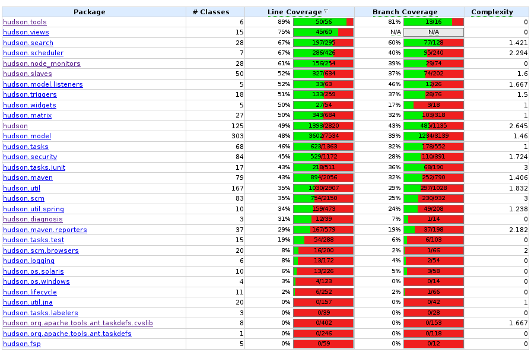

API Testing with Mocha
Jonathan Griggs
jonathan@ombud.com
Tim Myers
tim@ombud.com
What is a Test?
“Asserting the functional state of a system by comparing its expected output with its actual output.”
“Asserting the functional state of a system by comparing its expected output with its actual output.”
Example
var assert = require('assert');
function add(t1,t2) {
return 2;
}
assert.equal(add(1,1),2); // Pass
assert.equal(add(1,2),3); // Fail
var assert = require('assert');
function add(t1,t2) {
return 2;
}
assert.equal(add(1,1),2); // Pass
assert.equal(add(1,2),3); // Fail
Assertions
- A statement that evaluates to Boolean true or false at runtime.
- Continue if true
- Throw error if false
- Most commonly seen in Automated Tests
- Check system correctness at runtime (values within expected boundaries, etc)
- Used in mission-critical software to fail-fast on potentially catastrophic behaviors
- Part of JPL's C Coding Standards
- Design-by-contract languages like Eiffel
Eiffel example - Counter
indexing
description: "Counters that you can increment by one,'
decrement, and increment"
class interface
COUNTER
feature -- Access
item: INTEGER
-- Counter's value.
feature -- Element change
increment is
-- Increase counter by one.
ensure
item = old item + 1
decrement is
-- Decrease counter by one.
require
item > 0
ensure
item = old item - 1
reset is
-- Reset counter to zero.
ensure
item = 0
invariant
item >= 0
end
indexing
description: "Counters that you can increment by one,'
decrement, and increment"
class interface
COUNTER
feature -- Access
item: INTEGER
-- Counter's value.
feature -- Element change
increment is
-- Increase counter by one.
ensure
item = old item + 1
decrement is
-- Decrease counter by one.
require
item > 0
ensure
item = old item - 1
reset is
-- Reset counter to zero.
ensure
item = 0
invariant
item >= 0
end
Kinds of Tests
- Unit
- Integration
- Functional
- Acceptance
- Regression
- ...many more
Example: Roku Pairing Token API

- Token Web App - A front-end user interface
- Token Rest API - A server-side RESTful API
- Token Generator - A class that generates security tokens
- Token DB - A class that persists tokens to a database
Unit Test
- Tests a self-contained "unit" of code in isolation
- Methods
- Functions
- Classes
- Generally the highest level of granularity
- Often uses mocks and stubs to abstract away external dependencies
Unit Test Scenario

Another unit test

This is also a unit test

Integration Test
- Interaction of multiple components
- Ensures the plumbing works
- May involve
- Databases
- External services
- Caches
- Can catch many defects elusive to Unit Testing alone
Integration Test Scenario

Functional Test
- Feature or User-story centric
- Tests Behavior of the System
- Usually, also integration tests
Functional Test Scenario

Acceptance Test
- May serve as a delivery contract with product stakeholders
- More formal version of a functional test
- May be performed manually by Quality Assurance
- May just be an automated functional test
Regression Test
- Ensure you haven't broken anything that previously worked
- A suite of previously passed acceptance or functional tests
- May be performed manually by Quality Assurance
- May be the entirety of your automated testing
Other Testing Terminology
- Test Driven Development (TDD)
- Write your tests first
- Your tests will fail
- Make your tests pass by implementing
- Behavior Driven Development (BDD)
- Special Case of TDD
- Tests are defined in plain-english, describing the behavior of the system
- Often using the language of agile user stories
- Acceptance Tests are often BDD
Question Break
Why Test?
(Skeptical)
You Really Should Test
- An obviously virtuous activity that everybody knows is a good idea.
Eat your vegetables, they're good for you!
Approach
(Skeptical)
- I'll write some test harnesses to automate testing complex scenarios
- Has a cost, in terms of time and code
- All I need to do is write bug-free code
- We already test, it's called QA
Lessons
(Skeptical)
- QA catches some defects
- My code is, unfortunately, not perfect
- Some defects pass QA undetected
- Recurring cycle of fixing, breaking, refixing the same defects
- Often having to rewrite tests due to changing implementations
Why Test?
(Open-minded)
Thou Shalt Write Tests
- Code coverage is an indicator of code quality.
- All Existing Code Must Meet 80% Test Coverage
- All New Code Must Meet 95% Test Coverage
Someone's been doing a little airplane reading...
Code Coverage Report is the new hotness
Approach
(Open-minded)
- Code coverage probably does lead to higher quality code
- A good excuse to try Test Driven Development for new code
- A lot of existing code to write tests for
Lessons
(Open-minded)
- Writing tests for existing code was painful
- Tightly coupled code difficult to unit test without a major refactor...
- ...resulting in brittle, long-running tests that would break when changing seemingly unrelated code
- Tests were often reverse engineered based on the implementation...
- ...resulting in happy-path only tests
Lessons
(Open-minded)
- Code coverage not a good indicator of system correctness
- Cannot anticipate poorly articulated or incomplete requirements
- Cannot anticipate poorly interpreted requirements
Lessons
(Open-minded)
- Code coverage is a good indicator of problematic design
- Tightly-coupled subsystems become difficult to test, resulting in low coverage
- Muddy, unnecessary abstractions become difficult to test, resulting in low coverage. (See Fizzbuzz Enterprise Edition)
Lessons
(Open-minded)
- New code developed under TDD (test-first) seemed to be of "higher quality"
- Code coverage for free
- Minimal implementations
- More robust, reusable code
- Fewer repeat defects
What does this mean?
- Test-Driven Development has some positive side-effects
- Developers better understand the use case before they write a single line of code
- Code that is easier to test is easier to maintain
- Test failures become more meaningful
- Tests become a specification for the behavior of the system

Why Test?
(True Believer)
Let's do some TDD right now.
Use Case - Books API
- Front-end application needs a RESTful API for managing books
- Should be able to get a list of all books
- Should be able to get the details for a single book
- Should be able to create new books
- Should be able to update existing books
- Should be able to delete a book
Resources
- Mocha - http://mochajs.org/
- Should.js - https://github.com/shouldjs/should.js
- Supertest - https://github.com/visionmedia/supertest
- HTTP Status Code Definitions (W3C) - http://www.w3.org/Protocols/rfc2616/rfc2616-sec10.html
Thank You!
https://github.com/boatmeme/rest_test_mocha
- Jonathan Griggs - jonathan@ombud.com
- Tim Myers - tim@ombud.com